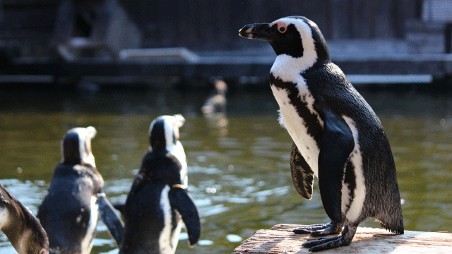

我が子の様子を見てイライラしたり心配する親は多いと感じます。
今は受験シーズンなので、受験生をもつ親の気がかりは「無事合格できるだろうか」というものでしょう。あるいは「受験生なのに集中しているように見えない」という心配かも知れません。
受験生の親に限らず、我が子の態度に日常的に心配を感じる親もいて我々もよく相談を受けます。
「テストが近いのに勉強しなくて困っている」
「学校から帰ってもすぐソファで寝てしまう」
「部屋が汚い」「計画的に行動しない」
こうして親の焦りは募ります。
「こんなことで将来ちゃんとやっていけるのか」
こういうとき親は「親という役割」に完全に同化してしまっているといえます。
そうなると
「親として子どもをどうにかしなければ･･･」
という思いはますます強まってしまいます。
確かに親の役目はあります。衣食住など子どもの必要性を満たしてあげること。危険にさらさないよう配慮すること。いまやるべきことやすべきでないことを明確に指示し、時には強い口調で命令したり叱ることも必要です。人間としてのマナーやルールの大切さを教えることも重要です。
しかし「親であること」がアイデンティティの大半を占めるようになると、親の役割を過剰に拡大し本来子どもが自己責任で果すべき領域まで侵食してしまいがちです。
特に母親の中にはこのように「役割と同一化」してしまい、子どもが思春期を過ぎても親としてのアイデンティティを引きずってしまう人が見られます。
つまり親であることを手放せない。子どもに必要とされることを心のどこかで望み続けるわけです。
恐ろしいことにこういう母親は、たとえば息子が40過ぎの中年になっても「あの子のことは私がいちばん知っている」などと言って、嫁との確執を引き起こし続けたりします。
現に最近は男女を問わず「大人になり切れない」高齢の子ども(!?)が量産されています。
子どもが成人してもなお我が子を支配し続けたい親の存在は、今や社会現象であり最近はそう珍しいことではないのです。
結果として社会の幼児化が進むことになります。
親という役割を演じすぎるな
親という「役割」との強すぎる同一化は、厳しい言い方ですが子どもを支配することで自分の存在感を強めようというエゴの欲望そのものです。
母親に限らず父親の中にも、役割と同一化し親としてのアイデンテイティを維持したいがために子どもを操り、自らの果せなかった夢を実現させようとしたり欠落を埋めようとする人もいます。
仕事や人間関係など今イチうまくいってない、人生に不満や欠落感を抱えている人に多いと感じます。（社会的地位の高低は関係ない）
もちろん親は意図的にやっているわけではありません。無意識で我が子に自分の理想の人生を投影しているのです。
自分が支配的な親だとはみじんも思っていないのです。
だからこそタチが悪いといえます。無意識レベルの欲求（衝動）は制御不能で暴走しやすいからです。
それどころか表面上は子どものことを心配しているように見えるし、当人も子どもの将来を思ってのことだと信じ切っているからです。周囲からは教育熱心な良い親だと評価されていたりするでしょう。
このような親に育てられた子どもは当然ながら自立心を阻害され、自己決定能力もなく他者との健全な人間関係の構築にも困難を感じるでしょう。そしてもっとも悪いことは、人生に満足感や幸福感をあまり感じられなくなることです。
なぜなら満足で幸福な人生を歩むためには自由の感覚が必要ですが、彼らには「自由」ということがよく分からないからです。
むしろ自由に選択したり行動することが何か親を裏切るような一種の罪悪のように見えるのです。
このように親があまりに「親の役割」と同化することによって、親子2代に渡って不幸の連鎖が生じてしまうことさえあるのです。
だから親は自分が「役割」を演じすぎていないか点検し、親という役割にアイデンティティを求めすぎていないか気づくことが必要です。
親子に限らず過剰な役割演技は真の人間関係を阻害するものです。
たとえば教師が「ダメな生徒」を正そうとすればするほど、ダメな生徒が彼のもとに現われるようなものです。この場合何が起こっているのかといえば、この教師の中には「ダメな生徒を立派に更生する良き教師」という理想像（役割）が無意識にあり、その役割を実現するためにはダメな生徒が必要であり結果として生徒は「ダメ」であり続けてしまうということです。
つまり彼が「良い教師」という役割を演じようとするほど、生徒も役割（ダメな生徒）を演じなければならなくなるということです。
同じことは医者と患者、上司と部下、正義感をかざす人と悪人（と見なされる人）などの関係にもみられることです。
だからもしあなたが親としての役割を過剰に演じるほど、子どもも「子どもとして」ふるまわざるを得ない。要するに親に心配をかける子どもという役割を演じ続けるということです。
これは親子が「役割演技」の中で互いの真の姿を見失っている状態といえます。
子どもの「いま」に関心を注ぐ
だからこの負のループから抜け出すには第一に、親が過剰に「役割」を演じていることに気づくことが大事です。
親という役割にしがみつくのをやめて一個の人間として自分と子どもの関係をとらえ直すということです。
「親である」「子どもである」という枠を外してみれば、そこには1人の大人（あなた）と1人の年少者がいるのみであり、それは人生経験上の差はあるにしても対等の人間同士であるはずです。
「自分は親である」というアイデンティティの下では見えてこなかった子どもの「真の姿」が新鮮な感覚で見えてきます。
親アイデンティティが強いときは、どうしても我が子は「こうあるべき」「こうしてくれなくては･･･」という思いに囚われています。
それは上から目線で子どもに特定の行為を強いる方法に他なりません。
その上下関係に基づく親子のあり方ではなく、いったん互いの立場（役割）をフラットにした上で愛情を込めた関心を向けてみればよいのです。
ここで大事なのは「愛ある関心」であって心配ではありません。「このままでは将来困るのでは」などと「心配」に名を借りて相手をコントロールすることではありません。
親は子どもの将来を心配する必要は全くありません。子どもの将来は子どものものであって「他者」が云々することではありません。
そんなことより子どもの「いま」に関心を向けて下さい。関心を向けるとは、イチイチうるさく干渉したりハラハラ心配することではありません。
子どもを完全に信頼し、子どもと一緒にいられる今この瞬間に感謝し愛をもって見守るということです。
子どもと共に過ごす時間は実はそれほど長くはありません。今この時間もあっという間に過ぎ去ります。子どもは成長しすぐに親元を去って行くでしょう。
ならばこの貴重な時間を子どもと過ごす喜びに変えたほうがよいのではありませんか。
親としての威厳を保つためか子どもの前で本音を見せないあるいは弱音を吐かない人がいますが、賛成できません。
楽しいときは笑い悲しいときは泣き、腹が立ったら怒る。困ったときは悩む。その姿を子どもに見られてもいい。弱点をさらしてもよいのです。（というか子どもはとっくに見抜いている）
そうすれば子どもも安心してこの関係の中でくつろぐことができます。
こうして親子が「いま」を大切に生きていけば逆説的に子どもも「将来を生き抜く力」を身につけることができるでしょう。
親が心がけるべきは、子どもの将来を案じ子どもに失敗しないよう取り計らうことではありません。失敗してもくじけない心をこそ養うべきであって、むしろ失敗を成長の糧にするようなたくましさを持つ人間にすることです。
子どももいつか失敗したり人生の壁にぶつかるでしょう。挫折も経験するでしょう。いっぱい傷つくこともあるでしょう。
それらの試練を乗り越える力の源泉は、今この瞬間の親子のあり方から発せられるのです。
それは親が役割という仮面を脱ぎ去って、ゆるぎない信頼と愛情に基づく本音の姿で子どもと向き合っている姿勢そのものによって育まれるものです。
それはちょうど教師が「生徒をよくしてやろう」などと思わず、ただ生徒をあるがまま信頼し自らも人間として向き合ったとき、生徒たちに向上心が芽ばえ変わっていくこととどこか似ているかも知れません。
今日の話、親の皆さんにとって少々厳しい内容だったかも知れません。
しかし、子どもを手放そうとせず親であり続けようとする人があまりに多い今だからこそ自戒の意味をこめて書いた次第です。